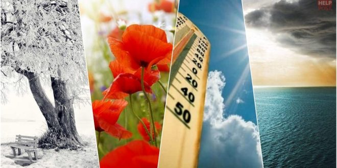

Demo - Πίνακας μετεωρολογικών σταθμών
|
|
|
|
|
|---|
| Περιφ. | Πόλη Περιοχή |
Yψομ. (m) | Ιδιοκ τησία | Ημέρα | Χρόνος Aναν. | Θερμ. (°C) | Θερμ. Εύρος (°C) | Υγρασ. (%) | Ατμ. Πίεση (hPa) | Άνεμ. (km/h) | Διεύθ. Ανέμου | Ραγδ. (mm/h) | Υετός Σήμερα (mm) | Yετός Μήνα (mm) | Υετός Έτους (mm) | Καιρός |
|---|---|---|---|---|---|---|---|---|---|---|---|---|---|---|---|---|
| Κεντρική Μακεδονία | Παλαιός Μυλότοπος Ν.Πέλλας | 9 | NOA | 10/03/2022 | 41' πρίν | 1.8 | 3.8 | 83 | 1017.7 | 14.5 | 0.0 | 9.6 | 78.2 | 259.2 | ||
| Ανατολικής Αττικής | Καλύβια Ανατολικής Αττικής | 20 | NOA | 10/03/2022 | 31' πρίν | 5.2 | 5.5 | 60 | 1017.7 | 9.7 | 0.0 | 0.8 | 18.4 | 172.2 | ||
| Κεντρική Μακεδονία | Κρύα Βρύση Ν.Πέλλας | 4 | NOA | 10/03/2022 | 41' πρίν | 3.3 | 4.6 | 70 | 1016.3 | 3.2 | 0.0 | 9.8 | 63.8 | 196.2 | ||
| Κεντρική Μακεδονία | Κωνσταντία Ν.Πέλλας | 149 | NOA | 10/03/2022 | 21' πρίν | 6.1 | 4.4 | 72 | 1014 | 6.4 | 0.0 | 3.6 | 49.6 | 176.4 |
| Περιφ. | Σταθμός | Υψόμετρο (m) | Mean Temp (°C) | Max Temp (°C) | Min Temp (°C) | Heat Deg Days | Cool Deg Days | Rain (mm) | Avg Wind (km/h) | High Gust (km/h) | Wind Dir |
|---|
| Περιφ. | Σταθμός | Υψόμ. (m) | Mean Max (°C) | Mean Min (°C) | Mean (°C) | High Temp (°C) | Low Temp (°C) | Max T>=32 | Max T<=0 | Min T<=0 | Min T<=-18 | Total Rain (mm) | Max Obs. Day | Avg Wind (km/h) | High Gust (km/h) | Wind Dir |
|---|
| Περιφ. | Σταθμός | Yψόμετρο (m) | High Temp (°C) | Low Temp (°C) | High Hum (%) | Low Hum (%) | High Dew (°C) | Low Dew (°C) | High Bar (hPa) | Low Bar (hPa) | High Gust (km/h) | High Rate (mm/h) | Sum Rain (mm) | Low Wind Chill (°C) | High Heat Index (°C) |
|---|---|---|---|---|---|---|---|---|---|---|---|---|---|---|---|
| Κεντρική Μακεδονία | Παλαιός Μυλότοπος Ν.Πέλλας | 9 | 3.9 | 0.1 | 84 | 70 | -0.5 | -3.0 | 1017.7 | 1013.5 | 19.3 | 2 | 9.6 | -3.8 | 3.9 |
| Ανατολικής Αττικής | Καλύβια Ανατολικής Αττικής | 20 | 6.9 | 1.4 | 87 | 58 | 0.5 | -2.4 | 1018 | 1014.8 | 43.5 | 2.2 | 0.8 | -2.7 | 6.7 |
| Κεντρική Μακεδονία | Κρύα Βρύση Ν.Πέλλας | 4 | 4.3 | -0.3 | 80 | 67 | -0.7 | -3.8 | 1016.5 | 1013.6 | 14.5 | 7 | 9.8 | -0.3 | 3.9 |
| Κεντρική Μακεδονία | Κωνσταντία Ν.Πέλλας | 149 | 6.7 | 2.3 | 92 | 65 | 3.5 | 0.3 | 1014 | 1011.3 | 20.9 | 2.4 | 3.6 | 0.1 | 6.3 |
